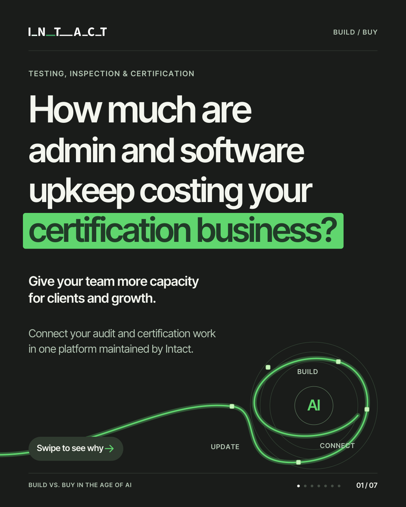

A short film to open the conversation. A carousel to make the case. Your own numbers to take it further.
Intact Draft post
Testing, inspection & certification software
LinkedIn · Short video
01
AI can speed up the build. Who pays for the next five years?
Security. Integrations. Updates. Support. The launch is a milestone. Owning the software is an ongoing commitment from your budget and your people.
And every new AI tool brings another question: who connects it, secures it and keeps it current?
Intact maintains the core audit and certification platform and shares the investment in maintenance, security and ongoing AI development across its customers.
Your team can focus on certification, clients and growth. Your decisions and your data stay yours.
How much capacity does upkeep take from your business today?
Use your own numbers in the calculator, then explore The Real Cost of Building It Yourself. Calculate your cost →
#Certification #BusinessGrowth #BuildVsBuy
Intact Draft post
Testing, inspection & certification software
LinkedIn · Document carousel
02
Your team’s time belongs in the software budget.
Maintenance doesn’t just consume money. It consumes the capacity you need for clients, certification work and the next stage of growth.
Swipe through the seven-slide breakdown: → What faster AI-assisted building changes. → The responsibility that stays with your business. → How shared platform investment changes the decision. → Where your decisions and data remain in your hands.
Intact takes on core platform upkeep and shares the investment in maintenance, security and ongoing AI development across its customers. Evidence, reviews, certification decisions and certificate history stay connected in one traceable process.
Before you approve the next build, count the work that comes after it.
The Real Cost of Building It Yourself is the guide behind this breakdown.
#Certification #BuildVsBuy #BusinessGrowth
Keep up. Keep growing.1 / 7

SWIPE OR USE THE ARROWS
Proposed posts for review. No engagement figures are simulated, and nothing has been posted to LinkedIn.
THE THINKING / THREE ASSET IDEAS
One decision. Three useful entry points.
The audience owns growth, budget and delivery. Start with the capacity their business is paying for, then explain the ongoing commitment behind a software decision. AI is part of that decision; the message stays focused on business ownership.
A 42-second motion graphic for the Intact company page on LinkedIn. The supplied film plays here in full.
THE HOOK
“AI can speed up the build. Who pays for the next five years?”
The opening frame asks: “How much are admin and software upkeep costing your certification business?” The caption adds the longer-term ownership question.
THE ANGLE
Faster building doesn’t remove the ongoing call on your budget and your people.
HOW INTACT SOLVES IT
Intact maintains the core audit and certification platform and shares maintenance, security and ongoing AI investment across its customers, while your team retains its decisions and data.
A seven-slide PDF document post on LinkedIn. Readers can move from the cost question to the ongoing work, the Intact answer and the next step.
THE HOOK
“Your team’s time belongs in the software budget.”
The first slide starts with admin and software upkeep costs. The caption makes the hidden capacity cost explicit.
THE ANGLE
The build-or-buy decision includes the people who will maintain the software, not just the initial development bill.
HOW INTACT SOLVES IT
A maintained platform shares core upkeep and ongoing AI investment. Connected evidence, human review, decisions and certificate history make the process concrete. Industry proof supports the case: 100+ companies, 96% implementation success and 20+ years of experience, as reported by Intact.
A campaign landing page linked from the LinkedIn posts, with a USD cost calculator, the Intact answer, a two-page whitepaper preview and a contact step.
THE HOOK
“Time is money. We help you save both.”
The next question makes it specific: “How much do admin and software upkeep cost your certification business?”
THE ANGLE
Let the reader put a cost against their current workload, then use the full guide to compare building and buying on the same scope.
HOW INTACT SOLVES IT
The whitepaper connects shared platform investment with no-code workflows, standardized processes, live dashboards and control of your own data. The page brings those points together around a practical business decision.
WHITEPAPER · PP. 3, 6, 8–11
i
The 13.5 hours on slide 3 is industry context from Stripe/Harris Poll’s The Developer Coefficient (2018), cited in the whitepaper. It is not an Intact customer result. The company figures are Intact-reported in the August 2026 whitepaper. The calculator uses the visitor’s inputs and makes no savings promise.